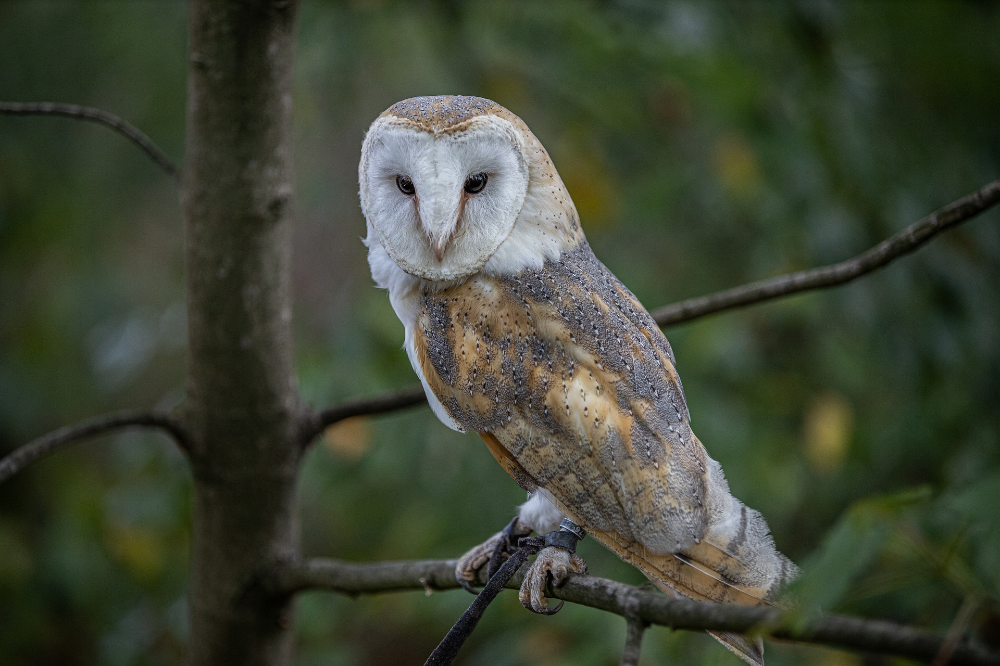
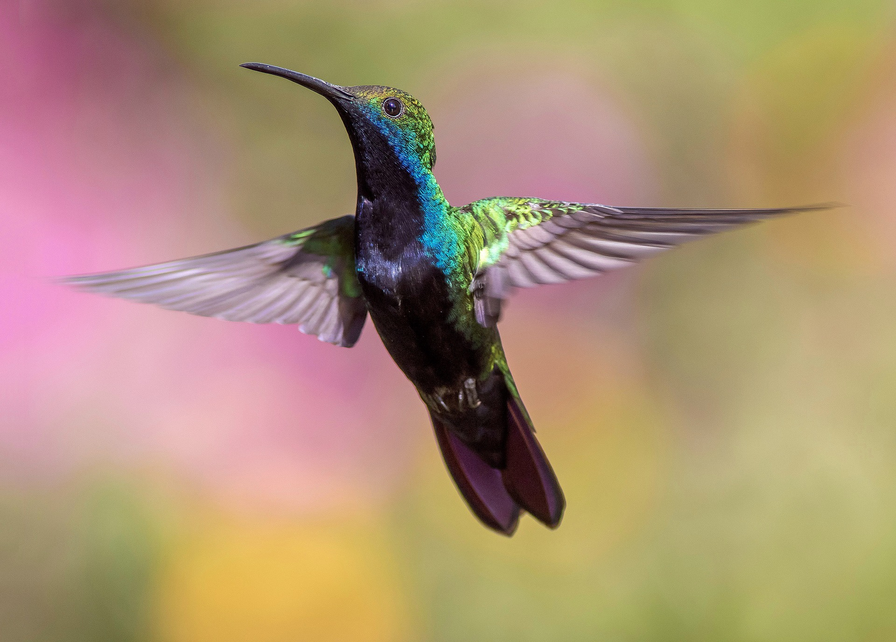
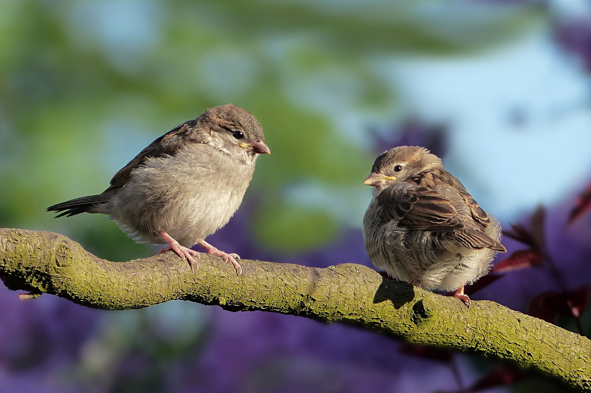

Birds

1. Owls - Owls can rotate their necks 270 degrees.

2. Robins - Robin eggs are light blue.
3. Hummingbirds - Hummingbirds can fly backwards.

4. Sparrows - Sparrows weigh only 0.8 to 1.4 ounces.

1
2
3
4